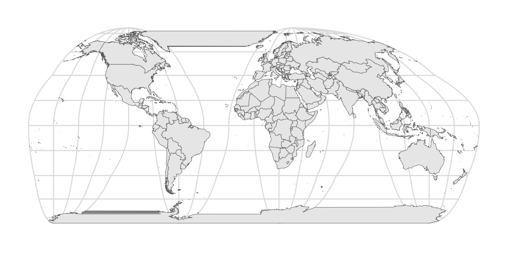
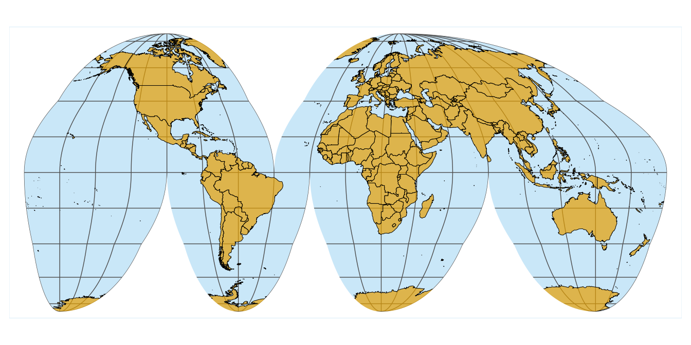

For this example, we will use the following packages.
library(tidyverse)
library(cowplot) # for theme_minimal_grid()
library(sf) # for manipulation of simple features objects
library(rworldmap) # for getMap()We obtain a basic map of the world via the getMap() function from the rworldmap package.
world_sf <- st_as_sf(getMap(resolution = "low"))
ggplot(world_sf) +
geom_sf(size = 0.5/.pt) +
theme_minimal_grid()
Now we reproject using the interrupted Goode homolosine projection. It is available via coord_sf().
crs_goode <- "+proj=igh"
ggplot(world_sf) +
geom_sf(size = 0.5/.pt) +
coord_sf(crs = crs_goode) +
theme_minimal_grid()
This figure reveals a few problems: First, land masses that are separated by the cuts (Greenland and Antarctica) are drawn as if they occupied the space between the cuts as well. Second, the parallels are not interrupted by the cuts. We can address these problems by drawing a polygon that covers the parts that should not have been drawn in the first place.
We start by creating a polygon that encircles the world but excludes the cuts. This is easy in longitude-latitude coordinates. The cuts are at -40 degrees longitude above the equator and at -100, -20, and 80 degrees longitude below the equator. Also remember: The equator lies at 0 degrees latitude, the north pole at 90 degrees latitude, and the south pole at -90 degrees. Latitudes run from -180 degrees to 180 degrees.
# projection outline in long-lat coordinates
lats <- c(
90:-90, # right side down
-90:0, 0:-90, # third cut bottom
-90:0, 0:-90, # second cut bottom
-90:0, 0:-90, # first cut bottom
-90:90, # left side up
90:0, 0:90, # cut top
90 # close
)
longs <- c(
rep(180, 181), # right side down
rep(c(80.01, 79.99), each = 91), # third cut bottom
rep(c(-19.99, -20.01), each = 91), # second cut bottom
rep(c(-99.99, -100.01), each = 91), # first cut bottom
rep(-180, 181), # left side up
rep(c(-40.01, -39.99), each = 91), # cut top
180 # close
)
goode_outline <-
list(cbind(longs, lats)) %>%
st_polygon() %>%
st_sfc(
crs = "+proj=longlat +ellps=WGS84 +datum=WGS84 +no_defs"
)To demonstrate what we have done, we plot the world in long-lat coordinates, with the Goode outline on top. We fill the outline with a light red, mostly transparent color to show where it lies. We see the cuts as four vertical lines, one from the top to the middle and three from the bottom to the middle.
ggplot(world_sf) +
geom_sf(size = 0.5/.pt) +
geom_sf(data = goode_outline, fill = "#FF808015", color = "#FF8080", size = 0.5) +
theme_minimal_grid()
If we repeat the same plot but using the Goode transformation, it becomes clearer what we are doing. Our outline exactly covers the world map, and it has now opened up along the cuts.
ggplot(world_sf) +
geom_sf(size = 0.5/.pt) +
geom_sf(data = goode_outline, fill = "#FF808015", color = "#FF8080", size = 0.5) +
coord_sf(crs = crs_goode) +
theme_minimal_grid()
However, we need to cover up the parts that are drawn outside this shaded area. To do so, we create a rectangle that is 10% larger than the bounding box of the Goode outline and then subtract the outline from that rectangle.
# now we need to work in transformed coordinates, not in long-lat coordinates
goode_outline <- st_transform(goode_outline, crs = crs_goode)
# get the bounding box in transformed coordinates and expand by 10%
xlim <- st_bbox(goode_outline)[c("xmin", "xmax")]*1.1
ylim <- st_bbox(goode_outline)[c("ymin", "ymax")]*1.1
# turn into enclosing rectangle
goode_encl_rect <-
list(
cbind(
c(xlim[1], xlim[2], xlim[2], xlim[1], xlim[1]),
c(ylim[1], ylim[1], ylim[2], ylim[2], ylim[1])
)
) %>%
st_polygon() %>%
st_sfc(crs = crs_goode)
# calculate the area outside the earth outline as the difference
# between the enclosing rectangle and the earth outline
goode_without <- st_difference(goode_encl_rect, goode_outline)
ggplot(world_sf) +
geom_sf(size = 0.5/.pt) +
geom_sf(data = goode_without, fill = "#FF808015", color = "#FF8080", size = 0.5) +
coord_sf(crs = crs_goode) +
theme_minimal_grid()
If we plot this polygon with a solid white fill and no outline, we have successfully covered the parts that should not make it into the final figure.
ggplot(world_sf) +
geom_sf(size = 0.5/.pt) +
geom_sf(data = goode_without, fill = "white", color = "NA") +
coord_sf(crs = crs_goode) +
theme_minimal_grid()
Now we can start to apply some styling. We set the background color to light blue and the fill color for the land masses to a light orange-brown.
ggplot(world_sf) +
geom_sf(fill = "#E69F00B0", color = "black", size = 0.5/.pt) +
geom_sf(data = goode_without, fill = "white", color = "NA") +
coord_sf(crs = crs_goode) +
theme_minimal_grid() +
theme(
panel.background = element_rect(fill = "#56B4E950", color = "white", size = 1),
panel.grid.major = element_line(color = "gray30", size = 0.25)
)One problem that arises is that coord_sf() automatically expands the coordinate system to beyond the size of the largest object drawn, so that we end up with a blue band around the outside of the figure. We can address this problem by setting the limits manually.
ggplot(world_sf) +
geom_sf(fill = "#E69F00B0", color = "black", size = 0.5/.pt) +
geom_sf(data = goode_without, fill = "white", color = "NA") +
coord_sf(crs = crs_goode, xlim = 0.95*xlim, ylim = 0.95*ylim, expand = FALSE) +
theme_minimal_grid() +
theme(
panel.background = element_rect(fill = "#56B4E950", color = "white", size = 1),
panel.grid.major = element_line(color = "gray30", size = 0.25)
)
Finally, we add the outline back in, to give the map a defined visual extent.
ggplot(world_sf) +
geom_sf(fill = "#E69F00B0", color = "black", size = 0.5/.pt) +
geom_sf(data = goode_without, fill = "white", color = "NA") +
geom_sf(data = goode_outline, fill = NA, color = "gray30", size = 0.5/.pt) +
coord_sf(crs = crs_goode, xlim = 0.95*xlim, ylim = 0.95*ylim, expand = FALSE) +
theme_minimal_grid() +
theme(
panel.background = element_rect(fill = "#56B4E950", color = "white", size = 1),
panel.grid.major = element_line(color = "gray30", size = 0.25)
)